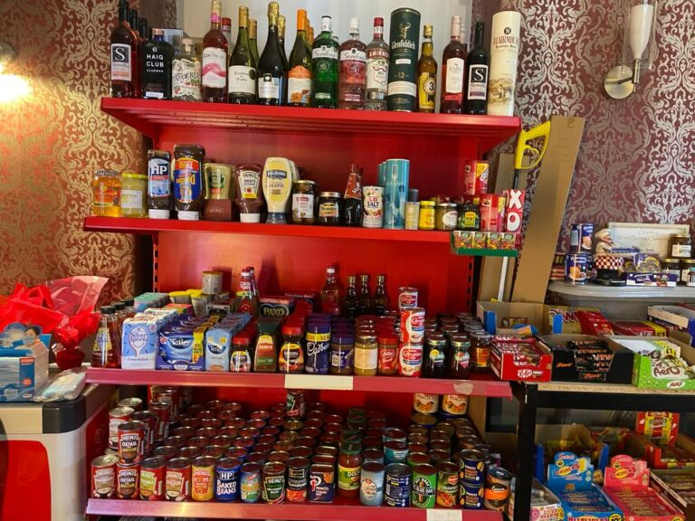

Village Shop & Takeaway
When the much-loved Caley's shop closed, we stepped in to keep the village supplied. Pop in for daily essentials, hearty takeaway dishes, and a friendly chat.

What's in Store
Our on-site shop is stocked every day with fresh milk, bread, meat, vegetables, and cupboard essentials, plus newspapers, magazines, and pet care basics.
Drivers and riders can grab hot and cold drinks, sandwiches, and takeaway meals from dawn through early evening — ideal for a quick pit stop between laps of the TT course.
Shop Opening Hours
- Monday – Friday: 07:00 – 17:00
- Saturday: 07:00 – 17:00
- Sunday: 10:00 – 16:00
Need something after hours? Let us know — we will do our best to help.